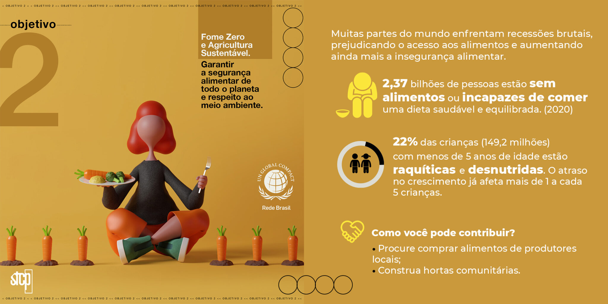

AgroGenTech Solutions
Veja como nosssa ideia pode transformar o modo como combater a fome
Saiba Mais
Descubra o poder da agricultura sustentável e como podemos alcançar as metas da ODS2!
Transformando o Mundo: Descubra o Poder da Agricultura Sustentável e Alcance as Metas da ODS 2!
Alimentando o Futuro de Forma Sustentável: O Poder da Agricultura na Meta ODS2
Você já parou para pensar na importância da agricultura sustentável? Ela não é apenas uma alternativa "verde", mas uma solução fundamental para alimentar a população mundial de maneira saudável e equilibrada, sem comprometer os recursos naturais do nosso planeta. E o melhor de tudo: ela está diretamente relacionada à Meta 2 da Agenda 2030 para o Desenvolvimento Sustentável, também conhecida como ODS2.
A ODS2 visa "acabar com a fome, alcançar a segurança alimentar e melhoria da nutrição, e promover a agricultura sustentável". É uma meta ambiciosa, porém absolutamente necessária para garantir um futuro próspero para todos.
Cultivando um Futuro Sustentável: Conectando Alimentos, Nutrição e Agricultura na Jornada da ODS2
Vamos dar uma olhada em cada um dos tópicos abordados pela ODS2 e entender como eles estão interligados:
1. Acabar com a fome: A fome é um problema persistente em muitas partes do mundo, mas a agricultura sustentável pode ser a chave para resolver essa questão. Ao adotar práticas agrícolas que promovam a diversificação de culturas, o uso eficiente de recursos hídricos e a produção de alimentos de forma responsável, podemos aumentar a oferta de alimentos nutritivos e acessíveis.
2. Segurança alimentar: Garantir que todas as pessoas tenham acesso a alimentos adequados e suficientes é essencial para a segurança alimentar. A agricultura sustentável pode ajudar a alcançar esse objetivo, proporcionando sistemas de produção resilientes, promovendo a agricultura familiar e investindo em infraestrutura agrícola que minimize perdas e desperdícios.
3. Melhoria da nutrição: A agricultura sustentável não se trata apenas de quantidade, mas também de qualidade dos alimentos. É importante cultivar alimentos ricos em nutrientes e promover uma alimentação balanceada. Além disso, a diversificação de culturas pode contribuir para a oferta de alimentos variados e saudáveis, reduzindo a dependência de monoculturas.
4. Agricultura sustentável: Aqui está o coração da questão. A agricultura sustentável envolve a adoção de práticas agrícolas que preservem o meio ambiente, protejam a biodiversidade, minimizem a degradação do solo e reduzam a emissão de gases de efeito estufa. Ela busca equilibrar as necessidades atuais com as futuras, garantindo que as gerações futuras também tenham acesso a recursos naturais e alimentos de qualidade.

Cultive a Mudança: Unindo Forças pela Agricultura Sustentável e as Metas da ODS2
Agora que você entende a importância da agricultura sustentável e como ela se relaciona com as metas da ODS2, fica claro que é fundamental agir. Cada um de nós pode contribuir, seja apoiando os agricultores locais, escolhendo alimentos orgânicos, reduzindo o desperdício ou promovendo políticas e práticas agrícolas mais sustentáveis.
Juntos, podemos fazer a diferença! Ao adotar a agricultura sustentável, estamos não apenas cuidando da nossa saúde, mas também preservando o futuro do nosso planeta. Vamos trabalhar juntos para alcançar as metas da ODS2 e construir um mundo mais justo, saudável e sustentável para todos. O futuro está em nossas mãos, e a hora de agir é agora!
Explorando a agricultura do futuro: Conhecendo os desafios e soluções
para alimentar o mundo